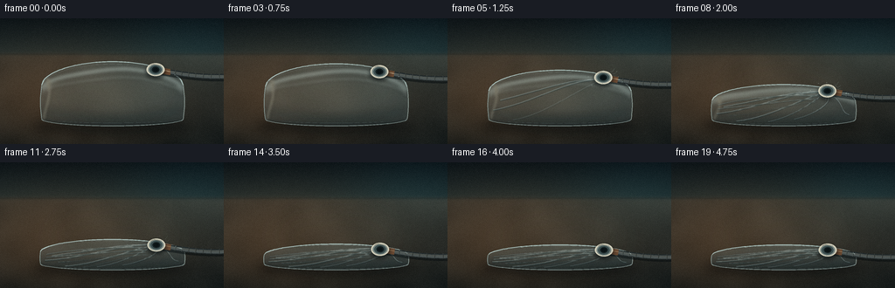
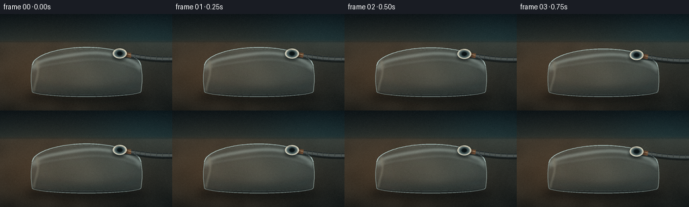
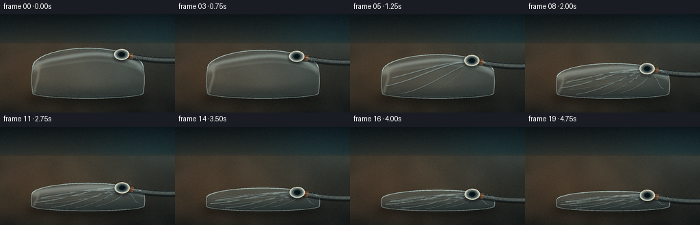

CODING AGENTS AS PIXEL WORLD MODELS
traex/DeepSeek-V4.1-Flash · mechanics_0026
点击播放 · 原生 RGB 像素
逐轮保存的候选
回放视频、检查图与代码变化。
每份候选均可单独播放。实际图片检查记录在下方工具轨迹中。
候选 01播放与检查图
点击播放 · 原生 RGB 像素

展开代码变化
--- 上一保存版本
+++ 本次保存版本
@@ -0,0 +1,451 @@
+from pathlib import Path
+import math
+
+import numpy as np
+from PIL import Image, ImageChops, ImageDraw, ImageFilter
+
+import artifact_io
+
+
+CASE_DIR = Path(__file__).resolve().parent
+OUT_W, OUT_H = 256, 144
+FRAMES = 20
+FPS = 4.0
+S = 4
+W, H = OUT_W * S, OUT_H * S
+
+
+def clamp(value, low=0.0, high=1.0):
+ return max(low, min(high, value))
+
+
+def smoothstep(edge0, edge1, value):
+ if edge0 == edge1:
+ return float(value >= edge1)
+ x = clamp((value - edge0) / (edge1 - edge0))
+ return x * x * (3.0 - 2.0 * x)
+
+
+def mix(a, b, amount):
+ return tuple(int(round(a[i] + (b[i] - a[i]) * amount)) for i in range(len(a)))
+
+
+def cubic(p0, p1, p2, p3, count=42):
+ points = []
+ for i in range(count):
+ u = i / (count - 1)
+ v = 1.0 - u
+ x = v**3 * p0[0] + 3 * v * v * u * p1[0] + 3 * v * u * u * p2[0] + u**3 * p3[0]
+ y = v**3 * p0[1] + 3 * v * v * u * p1[1] + 3 * v * u * u * p2[1] + u**3 * p3[1]
+ points.append((x, y))
+ return points
+
+
+def polyline(draw, points, fill, width):
+ pts = [(int(round(x * S)), int(round(y * S))) for x, y in points]
+ draw.line(pts, fill=fill, width=max(1, int(round(width * S))), joint="curve")
+
+
+def ellipse(draw, box, fill, width=1):
+ draw.ellipse(
+ tuple(int(round(v * S)) for v in box),
+ fill=fill,
+ width=max(1, int(round(width * S))),
+ )
+
+
+def make_background():
+ y, x = np.mgrid[0:H, 0:W]
+ xf, yf = x / S, y / S
+
+ horizon = 41.0
+ wall_t = np.clip(yf / horizon, 0.0, 1.0)[..., None]
+ wall = np.array([11.0, 19.0, 23.0]) * (1 - wall_t) + np.array([29.0, 42.0, 43.0]) * wall_t
+
+ table_t = np.clip((yf - horizon) / (OUT_H - horizon), 0.0, 1.0)[..., None]
+ table = np.array([48.0, 49.0, 44.0]) * (1 - table_t) + np.array([22.0, 28.0, 28.0]) * table_t
+
+ transition = 1.0 / (1.0 + np.exp(-(yf - horizon) / 1.25))
+ image = wall * (1 - transition[..., None]) + table * transition[..., None]
+
+ # A warm work light from the left gives the transparent pouch a readable rim.
+ pool = np.exp(-((((xf - 70.0) / 150.0) ** 2 + ((yf - 91.0) / 72.0) ** 2) * 1.35))
+ image += pool[..., None] * np.array([34.0, 17.0, 5.0])
+ cool_pool = np.exp(-((((xf - 218.0) / 105.0) ** 2 + ((yf - 35.0) / 60.0) ** 2) * 1.8))
+ image += cool_pool[..., None] * np.array([2.0, 10.0, 12.0])
+
+ rng = np.random.default_rng(23)
+ coarse = rng.normal(0, 1, (24, 42)).astype(np.float32)
+ coarse_img = Image.fromarray(((coarse - coarse.min()) * 11).astype(np.uint8), "L")
+ coarse_img = coarse_img.resize((W, H), Image.Resampling.BICUBIC).filter(ImageFilter.GaussianBlur(10 * S))
+ coarse_arr = np.asarray(coarse_img).astype(np.float32)
+ coarse_arr = (coarse_arr - coarse_arr.mean()) / max(1.0, coarse_arr.std())
+ table_texture = np.clip(transition - 0.05, 0.0, 1.0)
+ image += coarse_arr[..., None] * table_texture[..., None] * np.array([2.2, 2.0, 1.7])
+
+ # Fine tooth in the work surface.
+ fine = rng.normal(0, 1, (H // 2, W // 2)).astype(np.float32)
+ fine_img = Image.fromarray(np.clip(fine * 14 + 128, 0, 255).astype(np.uint8), "L")
+ fine_img = fine_img.resize((W, H), Image.Resampling.NEAREST)
+ fine_arr = np.asarray(fine_img).astype(np.float32) - 128.0
+ image += fine_arr[..., None] * table_texture[..., None] * 0.055
+
+ # Very soft horizon falloff instead of a hard studio backdrop seam.
+ seam = np.exp(-((yf - horizon) / 1.1) ** 2)
+ image *= 1.0 - seam[..., None] * 0.10
+
+ return Image.fromarray(np.clip(image, 0, 255).astype(np.uint8), "RGB").convert("RGBA")
+
+
+BACKGROUND = make_background()
+
+
+def bag_geometry(t):
+ puff = (1.0 - t) ** 0.78
+ left = 46.0 + 1.5 * (1.0 - t)
+ right = 211.0 - 1.5 * (1.0 - t)
+ top_edge = 106.5 - 30.0 * puff
+ top_center = 94.5 - 45.0 * puff
+ bottom_edge = 116.5 - 1.0 * puff
+ bottom_center = 123.0
+
+ top_points = []
+ bottom_points = []
+ for i in range(85):
+ u = i / 84.0
+ x = left + (right - left) * u
+ dome = (max(0.0, 1.0 - (2.0 * u - 1.0) ** 2)) ** 0.54
+ top_points.append((x, top_edge - (top_edge - top_center) * dome))
+ bottom_points.append((x, bottom_edge + (bottom_center - bottom_edge) * dome))
+
+ side_bulge = 1.5 * (0.35 + 0.65 * puff)
+ left_side = []
+ right_side = []
+ for i in range(17):
+ v = i / 16.0
+ bow = math.sin(math.pi * v) * side_bulge
+ left_side.append((left - bow, top_edge + (bottom_edge - top_edge) * v))
+ right_side.append((right + bow, top_edge + (bottom_edge - top_edge) * v))
+
+ outline = top_points + right_side + list(reversed(bottom_points)) + list(reversed(left_side))
+ return {
+ "left": left,
+ "right": right,
+ "top_points": top_points,
+ "bottom_points": bottom_points,
+ "left_side": left_side,
+ "right_side": right_side,
+ "outline": outline,
+ "puff": puff,
+ }
+
+
+def surface_point(geom, u, v):
+ u = clamp(u)
+ v = clamp(v)
+ x = geom["left"] + (geom["right"] - geom["left"]) * u
+ dome = (max(0.0, 1.0 - (2.0 * u - 1.0) ** 2)) ** 0.54
+ top_edge = geom["top_points"][0][1]
+ top_center = geom["top_points"][42][1]
+ bottom_edge = geom["bottom_points"][0][1]
+ bottom_center = geom["bottom_points"][42][1]
+ top = top_edge - (top_edge - top_center) * dome
+ bottom = bottom_edge + (bottom_center - bottom_edge) * dome
+ return x, top + (bottom - top) * v
+
+
+def top_y_at(geom, x):
+ u = clamp((x - geom["left"]) / (geom["right"] - geom["left"]))
+ return surface_point(geom, u, 0.0)[1]
+
+
+def draw_bag(base, geom, t, frame_index):
+ mask = Image.new("L", (W, H), 0)
+ mdraw = ImageDraw.Draw(mask)
+ mdraw.polygon([(int(x * S), int(y * S)) for x, y in geom["outline"]], fill=255)
+
+ # The pouch is mostly transparent, with a cool tint and a soft density toward its lower edge.
+ fill = Image.new("RGBA", (W, H), (0, 0, 0, 0))
+ fdraw = ImageDraw.Draw(fill)
+ fdraw.polygon(
+ [(int(x * S), int(y * S)) for x, y in geom["outline"]],
+ fill=(143, 183, 190, 42),
+ )
+ fill = Image.composite(fill, Image.new("RGBA", (W, H), (0, 0, 0, 0)), mask)
+ base.alpha_composite(fill)
+
+ interior = Image.new("RGBA", (W, H), (0, 0, 0, 0))
+ idraw = ImageDraw.Draw(interior)
+ bottom_band = [
+ surface_point(geom, u / 20.0, 0.78 + 0.10 * math.sin(math.pi * u / 20.0))
+ for u in range(21)
+ ]
+ polyline(idraw, bottom_band, (20, 42, 47, 70), 9.0)
+ interior = interior.filter(ImageFilter.GaussianBlur(5 * S))
+ interior.putalpha(ImageChops.multiply(interior.getchannel("A"), mask))
+ base.alpha_composite(interior)
+
+ # Broad reflection on the inflated upper film.
+ reflections = Image.new("RGBA", (W, H), (0, 0, 0, 0))
+ rdraw = ImageDraw.Draw(reflections)
+ if geom["puff"] > 0.18:
+ for offset, alpha, width in [(0.13, 70, 7.0), (0.26, 36, 4.0)]:
+ pts = [surface_point(geom, u / 40.0, offset + 0.025 * math.sin(u * 0.18)) for u in range(41)]
+ polyline(rdraw, pts, (225, 246, 239, alpha), width)
+ side_glow = [surface_point(geom, 0.035 + 0.02 * math.sin(i * 0.2), i / 24.0) for i in range(25)]
+ polyline(rdraw, side_glow, (242, 239, 210, 64), 4.0)
+ reflections = reflections.filter(ImageFilter.GaussianBlur(1.7 * S))
+ reflections.putalpha(ImageChops.multiply(reflections.getchannel("A"), mask))
+ base.alpha_composite(reflections)
+
+ # Fold lines become sharper and more numerous as the sheet is evacuated.
+ folds = Image.new("RGBA", (W, H), (0, 0, 0, 0))
+ fdraw = ImageDraw.Draw(folds)
+ wrinkle_specs = [
+ ((0.80, 0.10), (0.50, 0.21), (0.34, 0.39), (0.08, 0.47), 0.08, 1.7),
+ ((0.80, 0.10), (0.58, 0.18), (0.31, 0.56), (0.03, 0.69), 0.13, 1.6),
+ ((0.80, 0.10), (0.67, 0.31), (0.40, 0.77), (0.17, 0.91), 0.20, 1.4),
+ ((0.80, 0.10), (0.70, 0.44), (0.57, 0.77), (0.39, 0.90), 0.27, 1.2),
+ ((0.80, 0.10), (0.86, 0.40), (0.72, 0.73), (0.57, 0.84), 0.33, 1.1),
+ ((0.80, 0.10), (0.94, 0.32), (0.88, 0.62), (0.96, 0.73), 0.40, 1.0),
+ ((0.04, 0.37), (0.28, 0.31), (0.45, 0.26), (0.77, 0.23), 0.45, 1.0),
+ ((0.04, 0.52), (0.25, 0.51), (0.42, 0.44), (0.74, 0.31), 0.52, 1.0),
+ ((0.12, 0.75), (0.35, 0.69), (0.49, 0.51), (0.73, 0.39), 0.58, 0.9),
+ ((0.29, 0.92), (0.43, 0.84), (0.55, 0.59), (0.74, 0.45), 0.64, 0.8),
+ ]
+ for p0, p1, p2, p3, threshold, width in wrinkle_specs:
+ alpha = smoothstep(threshold, threshold + 0.16, t)
+ if alpha <= 0.01:
+ continue
+ path = cubic(p0, p1, p2, p3)
+ screen = [surface_point(geom, u, v) for u, v in path]
+ shadow = [(x, y + 0.65) for x, y in screen]
+ polyline(fdraw, shadow, (27, 52, 57, int(88 * alpha)), width * 1.25)
+ polyline(fdraw, screen, (226, 242, 237, int(104 * alpha)), max(0.55, width * 0.65))
+
+ # Fine secondary crinkles gather around the valve late in the evacuation.
+ late = smoothstep(0.55, 0.94, t)
+ if late > 0:
+ for i in range(7):
+ v0 = 0.16 + i * 0.075
+ pts = []
+ for j in range(22):
+ u = 0.77 - j * 0.028
+ v = v0 + 0.035 * math.sin(j * 0.48 + i * 0.9)
+ pts.append(surface_point(geom, u, v))
+ polyline(fdraw, pts, (201, 226, 222, int(55 * late)), 0.45)
+
+ folds = folds.filter(ImageFilter.GaussianBlur(0.35 * S))
+ folds.putalpha(ImageChops.multiply(folds.getchannel("A"), mask))
+ base.alpha_composite(folds)
+
+ # Heat-sealed perimeter and the inner seam make the empty pouch read as plastic.
+ seams = Image.new("RGBA", (W, H), (0, 0, 0, 0))
+ sdraw = ImageDraw.Draw(seams)
+ polyline(sdraw, geom["top_points"], (198, 224, 219, 220), 1.15)
+ polyline(sdraw, geom["bottom_points"], (183, 207, 203, 185), 0.95)
+ polyline(sdraw, geom["left_side"], (185, 213, 209, 165), 0.9)
+ polyline(sdraw, geom["right_side"], (199, 220, 212, 175), 0.9)
+
+ inner_top = [surface_point(geom, i / 60.0, 0.035) for i in range(61)]
+ polyline(sdraw, inner_top, (219, 236, 228, 95), 0.55)
+ inner_bottom = [surface_point(geom, i / 60.0, 0.955) for i in range(61)]
+ polyline(sdraw, inner_bottom, (181, 209, 204, 85), 0.55)
+ seams = seams.filter(ImageFilter.GaussianBlur(0.18 * S))
+ base.alpha_composite(seams)
+
+ return mask, geom
+
+
+def hose_curve(valve, frame_index, t):
+ active = smoothstep(0.03, 0.12, t) * (1.0 - smoothstep(0.92, 1.0, t))
+ vibration = 0.55 * active * math.sin(frame_index * 2.2)
+ p0 = (270.0, valve[1] + 7.5 + vibration)
+ p1 = (232.0, valve[1] + 10.0 + 0.4 * vibration)
+ p2 = (207.0, valve[1] + 5.0)
+ p3 = (valve[0] + 5.5, valve[1] + 1.0)
+ return cubic(p0, p1, p2, p3, count=52)
+
+
+def draw_hose(base, valve, frame_index, t):
+ curve = hose_curve(valve, frame_index, t)
+ hose = Image.new("RGBA", (W, H), (0, 0, 0, 0))
+ hdraw = ImageDraw.Draw(hose)
+ polyline(hdraw, [(x, y + 1.7) for x, y in curve], (6, 12, 14, 135), 7.2)
+ polyline(hdraw, curve, (35, 42, 43, 255), 6.1)
+ polyline(hdraw, curve, (76, 84, 83, 255), 3.7)
+ polyline(hdraw, [(x, y - 0.75) for x, y in curve], (155, 166, 159, 78), 1.0)
+
+ # Raised ribs make the hose immediately legible at the target resolution.
+ for i in range(4, len(curve) - 4, 5):
+ x, y = curve[i]
+ px, py = curve[max(0, i - 1)]
+ nx, ny = curve[min(len(curve) - 1, i + 1)]
+ tx, ty = nx - px, ny - py
+ length = max(0.001, math.hypot(tx, ty))
+ nx, ny = -ty / length, tx / length
+ rib = [(x - nx * 3.1, y - ny * 3.1), (x + nx * 3.1, y + ny * 3.1)]
+ polyline(hdraw, rib, (15, 22, 23, 220), 0.72)
+ polyline(hdraw, [(a, b - 0.45) for a, b in rib], (122, 132, 126, 85), 0.42)
+
+ coupling = curve[-9:]
+ polyline(hdraw, coupling, (105, 72, 49, 255), 7.0)
+ polyline(hdraw, [(x, y - 0.7) for x, y in coupling], (207, 151, 98, 150), 1.1)
+ base.alpha_composite(hose)
+
+
+def draw_valve(base, valve, frame_index, t):
+ vx, vy = valve
+ r = 10.3
+ shadow = Image.new("RGBA", (W, H), (0, 0, 0, 0))
+ sd = ImageDraw.Draw(shadow)
+ ellipse(sd, (vx - r * 1.12, vy - r * 0.74 + 2.0, vx + r * 1.12, vy + r * 0.82 + 2.0), (4, 10, 12, 150))
+ shadow = shadow.filter(ImageFilter.GaussianBlur(2.0 * S))
+ base.alpha_composite(shadow)
+
+ valve_img = Image.new("RGBA", (W, H), (0, 0, 0, 0))
+ vd = ImageDraw.Draw(valve_img)
+ ellipse(vd, (vx - r, vy - r * 0.72, vx + r, vy + r * 0.72), (211, 207, 186, 255))
+ ellipse(vd, (vx - r * 0.82, vy - r * 0.58, vx + r * 0.82, vy + r * 0.59), (119, 132, 128, 255))
+ ellipse(vd, (vx - r * 0.66, vy - r * 0.48, vx + r * 0.66, vy + r * 0.49), (59, 76, 77, 255))
+ ellipse(vd, (vx - r * 0.43, vy - r * 0.33, vx + r * 0.43, vy + r * 0.34), (19, 29, 31, 255))
+ ellipse(vd, (vx - r * 0.29, vy - r * 0.22, vx + r * 0.29, vy + r * 0.23), (8, 15, 17, 255))
+ # A few short slots and one clipped highlight keep the valve from looking like a button.
+ for angle in (0.4, 1.7, 2.9, 4.2, 5.4):
+ inner = r * 0.72
+ outer = r * 0.92
+ p0 = (vx + math.cos(angle) * inner, vy + math.sin(angle) * inner * 0.72)
+ p1 = (vx + math.cos(angle) * outer, vy + math.sin(angle) * outer * 0.72)
+ polyline(vd, [p0, p1], (205, 208, 193, 150), 0.5)
+ polyline(
+ vd,
+ [
+ (vx - r * 0.62, vy - r * 0.44),
+ (vx - r * 0.20, vy - r * 0.62),
+ (vx + r * 0.36, vy - r * 0.49),
+ ],
+ (249, 245, 221, 120),
+ 1.0,
+ )
+ base.alpha_composite(valve_img)
+
+
+def draw_suction(base, valve, frame_index, t):
+ active = smoothstep(0.03, 0.12, t) * (1.0 - smoothstep(0.84, 0.98, t))
+ if active <= 0.01:
+ return
+ vx, vy = valve
+ streaks = Image.new("RGBA", (W, H), (0, 0, 0, 0))
+ sdraw = ImageDraw.Draw(streaks)
+ phase = frame_index * 0.67
+ for i in range(6):
+ angle = -0.95 + i * 0.34
+ distance = 22.0 - (i % 3) * 3.5
+ start = (vx + math.cos(angle) * distance, vy + math.sin(angle) * distance * 0.58)
+ bend = (
+ vx + math.cos(angle + 0.25) * distance * 0.58,
+ vy + math.sin(angle + 0.25) * distance * 0.34,
+ )
+ end = (vx + math.cos(angle) * 11.0, vy + math.sin(angle) * 6.8)
+ path = cubic(start, bend, (vx + math.cos(angle) * 16.0, vy + math.sin(angle) * 9.0), end, count=18)
+ alpha = int((34 + 26 * (0.5 + 0.5 * math.sin(phase + i))) * active)
+ polyline(sdraw, path, (183, 226, 223, alpha), 0.45)
+ for i in range(9):
+ angle = i * 2.399 + phase * 0.42
+ radius = 13.0 + (i % 4) * 2.1
+ px = vx + math.cos(angle) * radius
+ py = vy + math.sin(angle) * radius * 0.62
+ alpha = int((32 + 20 * active) * active)
+ ellipse(sdraw, (px - 0.55, py - 0.4, px + 0.55, py + 0.4), (218, 239, 228, alpha))
+ base.alpha_composite(streaks)
+
+
+def draw_motes(base, frame_index):
+ rng = np.random.default_rng(91)
+ motes = Image.new("RGBA", (W, H), (0, 0, 0, 0))
+ md = ImageDraw.Draw(motes)
+ for i in range(24):
+ x = float(rng.uniform(15, 240))
+ y = float(rng.uniform(43, 136))
+ drift = 0.11 * frame_index * (0.5 + (i % 5) * 0.08)
+ yy = y + 0.16 * math.sin(frame_index * 0.55 + i)
+ alpha = int(18 + (i % 4) * 5)
+ ellipse(md, (x + drift - 0.35, yy - 0.28, x + drift + 0.35, yy + 0.28), (207, 222, 212, alpha))
+ motes = motes.filter(ImageFilter.GaussianBlur(0.3 * S))
+ base.alpha_composite(motes)
+
+
+def make_frame(frame_index):
+ schedule = [
+ 0.000, 0.005, 0.020, 0.070, 0.155,
+ 0.270, 0.405, 0.545, 0.675, 0.785,
+ 0.865, 0.920, 0.958, 0.981, 0.993,
+ 0.998, 1.000, 1.000, 1.000, 1.000,
+ ]
+ t = schedule[frame_index]
+ geom = bag_geometry(t)
+ frame = BACKGROUND.copy()
+
+ # Soft cast shadow and darker contact under the pouch.
+ shadow = Image.new("RGBA", (W, H), (0, 0, 0, 0))
+ sd = ImageDraw.Draw(shadow)
+ shadow_lift = 3.0 * geom["puff"]
+ ellipse(sd, (39, 112 + shadow_lift, 220, 130 + shadow_lift), (2, 8, 10, 105))
+ ellipse(sd, (52, 117, 207, 128), (2, 7, 9, 125))
+ shadow = shadow.filter(ImageFilter.GaussianBlur(5.0 * S))
+ frame.alpha_composite(shadow)
+
+ draw_motes(frame, frame_index)
+ mask, geom = draw_bag(frame, geom, t, frame_index)
+
+ # Contact shadow that survives the transparent fill.
+ contact = Image.new("RGBA", (W, H), (0, 0, 0, 0))
+ cd = ImageDraw.Draw(contact)
+ contact_line = [surface_point(geom, i / 50.0, 0.985) for i in range(51)]
+ polyline(cd, contact_line, (3, 12, 13, 115), 1.8)
+ contact = contact.filter(ImageFilter.GaussianBlur(1.4 * S))
+ contact.putalpha(ImageChops.multiply(contact.getchannel("A"), mask))
+ frame.alpha_composite(contact)
+
+ valve_x = geom["left"] + (geom["right"] - geom["left"]) * 0.805
+ valve_y = top_y_at(geom, valve_x) + 3.2
+ valve = (valve_x, valve_y)
+
+ draw_suction(frame, valve, frame_index, t)
+ draw_hose(frame, valve, frame_index, t)
+ draw_valve(frame, valve, frame_index, t)
+
+ # A restrained warm bounce on the lower edge ties the object to the table light.
+ bounce = Image.new("RGBA", (W, H), (0, 0, 0, 0))
+ bd = ImageDraw.Draw(bounce)
+ bounce_pts = [surface_point(geom, 0.08 + 0.84 * i / 32.0, 0.91) for i in range(33)]
+ polyline(bd, bounce_pts, (225, 158, 93, 30), 1.2)
+ bounce = bounce.filter(ImageFilter.GaussianBlur(1.8 * S))
+ bounce.putalpha(ImageChops.multiply(bounce.getchannel("A"), mask))
+ frame.alpha_composite(bounce)
+
+ # Gentle exposure lift on the subject area.
+ glow = Image.new("RGBA", (W, H), (0, 0, 0, 0))
+ gd = ImageDraw.Draw(glow)
+ ellipse(gd, (40, 40, 220, 128), (128, 188, 183, 9))
+ glow = glow.filter(ImageFilter.GaussianBlur(20 * S))
+ frame.alpha_composite(glow)
+
+ rgb = frame.convert("RGB").resize((OUT_W, OUT_H), Image.Resampling.LANCZOS)
+ arr = np.asarray(rgb).astype(np.float32)
+
+ # A fixed, very light film grain keeps the downsampled render from looking flat.
+ grain_rng = np.random.default_rng(500 + frame_index)
+ grain = grain_rng.normal(0, 1.45, (OUT_H, OUT_W, 1))
+ arr = np.clip(arr + grain, 0, 255).astype(np.uint8)
+ return arr
+
+
+def main():
+ frames = np.stack([make_frame(i) for i in range(FRAMES)], axis=0)
+ artifact_io.save(frames, CASE_DIR)
+ print(f"wrote {FRAMES} frames to {CASE_DIR}")
+
+
+if __name__ == "__main__":
+ main()
候选 02播放与检查图
点击播放 · 原生 RGB 像素


展开代码变化
--- 上一保存版本
+++ 本次保存版本
@@ -169,7 +169,7 @@
fdraw = ImageDraw.Draw(fill)
fdraw.polygon(
[(int(x * S), int(y * S)) for x, y in geom["outline"]],
- fill=(143, 183, 190, 42),
+ fill=(148, 188, 194, 47),
)
fill = Image.composite(fill, Image.new("RGBA", (W, H), (0, 0, 0, 0)), mask)
base.alpha_composite(fill)
@@ -189,11 +189,11 @@
reflections = Image.new("RGBA", (W, H), (0, 0, 0, 0))
rdraw = ImageDraw.Draw(reflections)
if geom["puff"] > 0.18:
- for offset, alpha, width in [(0.13, 70, 7.0), (0.26, 36, 4.0)]:
+ for offset, alpha, width in [(0.13, 82, 7.5), (0.26, 42, 4.2)]:
pts = [surface_point(geom, u / 40.0, offset + 0.025 * math.sin(u * 0.18)) for u in range(41)]
polyline(rdraw, pts, (225, 246, 239, alpha), width)
side_glow = [surface_point(geom, 0.035 + 0.02 * math.sin(i * 0.2), i / 24.0) for i in range(25)]
- polyline(rdraw, side_glow, (242, 239, 210, 64), 4.0)
+ polyline(rdraw, side_glow, (242, 239, 210, 76), 4.4)
reflections = reflections.filter(ImageFilter.GaussianBlur(1.7 * S))
reflections.putalpha(ImageChops.multiply(reflections.getchannel("A"), mask))
base.alpha_composite(reflections)
@@ -214,14 +214,14 @@
((0.29, 0.92), (0.43, 0.84), (0.55, 0.59), (0.74, 0.45), 0.64, 0.8),
]
for p0, p1, p2, p3, threshold, width in wrinkle_specs:
- alpha = smoothstep(threshold, threshold + 0.16, t)
+ alpha = smoothstep(threshold * 0.82, threshold * 0.82 + 0.13, t)
if alpha <= 0.01:
continue
path = cubic(p0, p1, p2, p3)
screen = [surface_point(geom, u, v) for u, v in path]
shadow = [(x, y + 0.65) for x, y in screen]
- polyline(fdraw, shadow, (27, 52, 57, int(88 * alpha)), width * 1.25)
- polyline(fdraw, screen, (226, 242, 237, int(104 * alpha)), max(0.55, width * 0.65))
+ polyline(fdraw, shadow, (27, 52, 57, int(102 * alpha)), width * 1.35)
+ polyline(fdraw, screen, (226, 242, 237, int(124 * alpha)), max(0.62, width * 0.72))
# Fine secondary crinkles gather around the valve late in the evacuation.
late = smoothstep(0.55, 0.94, t)
@@ -233,7 +233,7 @@
u = 0.77 - j * 0.028
v = v0 + 0.035 * math.sin(j * 0.48 + i * 0.9)
pts.append(surface_point(geom, u, v))
- polyline(fdraw, pts, (201, 226, 222, int(55 * late)), 0.45)
+ polyline(fdraw, pts, (201, 226, 222, int(68 * late)), 0.52)
folds = folds.filter(ImageFilter.GaussianBlur(0.35 * S))
folds.putalpha(ImageChops.multiply(folds.getchannel("A"), mask))
@@ -242,10 +242,10 @@
# Heat-sealed perimeter and the inner seam make the empty pouch read as plastic.
seams = Image.new("RGBA", (W, H), (0, 0, 0, 0))
sdraw = ImageDraw.Draw(seams)
- polyline(sdraw, geom["top_points"], (198, 224, 219, 220), 1.15)
- polyline(sdraw, geom["bottom_points"], (183, 207, 203, 185), 0.95)
- polyline(sdraw, geom["left_side"], (185, 213, 209, 165), 0.9)
- polyline(sdraw, geom["right_side"], (199, 220, 212, 175), 0.9)
+ polyline(sdraw, geom["top_points"], (198, 224, 219, 230), 1.2)
+ polyline(sdraw, geom["bottom_points"], (183, 207, 203, 195), 1.0)
+ polyline(sdraw, geom["left_side"], (185, 213, 209, 175), 0.95)
+ polyline(sdraw, geom["right_side"], (199, 220, 212, 185), 0.95)
inner_top = [surface_point(geom, i / 60.0, 0.035) for i in range(61)]
polyline(sdraw, inner_top, (219, 236, 228, 95), 0.55)
@@ -260,8 +260,8 @@
def hose_curve(valve, frame_index, t):
active = smoothstep(0.03, 0.12, t) * (1.0 - smoothstep(0.92, 1.0, t))
vibration = 0.55 * active * math.sin(frame_index * 2.2)
- p0 = (270.0, valve[1] + 7.5 + vibration)
- p1 = (232.0, valve[1] + 10.0 + 0.4 * vibration)
+ p0 = (271.0, valve[1] + 7.5 + vibration)
+ p1 = (231.0, valve[1] + 10.0 + 0.4 * vibration)
p2 = (207.0, valve[1] + 5.0)
p3 = (valve[0] + 5.5, valve[1] + 1.0)
return cubic(p0, p1, p2, p3, count=52)
@@ -271,10 +271,10 @@
curve = hose_curve(valve, frame_index, t)
hose = Image.new("RGBA", (W, H), (0, 0, 0, 0))
hdraw = ImageDraw.Draw(hose)
- polyline(hdraw, [(x, y + 1.7) for x, y in curve], (6, 12, 14, 135), 7.2)
- polyline(hdraw, curve, (35, 42, 43, 255), 6.1)
- polyline(hdraw, curve, (76, 84, 83, 255), 3.7)
- polyline(hdraw, [(x, y - 0.75) for x, y in curve], (155, 166, 159, 78), 1.0)
+ polyline(hdraw, [(x, y + 1.7) for x, y in curve], (6, 12, 14, 145), 8.1)
+ polyline(hdraw, curve, (31, 39, 40, 255), 7.0)
+ polyline(hdraw, curve, (74, 84, 82, 255), 4.3)
+ polyline(hdraw, [(x, y - 0.75) for x, y in curve], (168, 179, 169, 92), 1.2)
# Raised ribs make the hose immediately legible at the target resolution.
for i in range(4, len(curve) - 4, 5):
@@ -284,19 +284,19 @@
tx, ty = nx - px, ny - py
length = max(0.001, math.hypot(tx, ty))
nx, ny = -ty / length, tx / length
- rib = [(x - nx * 3.1, y - ny * 3.1), (x + nx * 3.1, y + ny * 3.1)]
- polyline(hdraw, rib, (15, 22, 23, 220), 0.72)
- polyline(hdraw, [(a, b - 0.45) for a, b in rib], (122, 132, 126, 85), 0.42)
+ rib = [(x - nx * 3.6, y - ny * 3.6), (x + nx * 3.6, y + ny * 3.6)]
+ polyline(hdraw, rib, (12, 19, 20, 235), 0.82)
+ polyline(hdraw, [(a, b - 0.45) for a, b in rib], (140, 150, 141, 98), 0.48)
coupling = curve[-9:]
- polyline(hdraw, coupling, (105, 72, 49, 255), 7.0)
- polyline(hdraw, [(x, y - 0.7) for x, y in coupling], (207, 151, 98, 150), 1.1)
+ polyline(hdraw, coupling, (113, 75, 49, 255), 8.0)
+ polyline(hdraw, [(x, y - 0.7) for x, y in coupling], (218, 161, 102, 170), 1.3)
base.alpha_composite(hose)
def draw_valve(base, valve, frame_index, t):
vx, vy = valve
- r = 10.3
+ r = 11.2
shadow = Image.new("RGBA", (W, H), (0, 0, 0, 0))
sd = ImageDraw.Draw(shadow)
ellipse(sd, (vx - r * 1.12, vy - r * 0.74 + 2.0, vx + r * 1.12, vy + r * 0.82 + 2.0), (4, 10, 12, 150))
@@ -305,11 +305,11 @@
valve_img = Image.new("RGBA", (W, H), (0, 0, 0, 0))
vd = ImageDraw.Draw(valve_img)
- ellipse(vd, (vx - r, vy - r * 0.72, vx + r, vy + r * 0.72), (211, 207, 186, 255))
- ellipse(vd, (vx - r * 0.82, vy - r * 0.58, vx + r * 0.82, vy + r * 0.59), (119, 132, 128, 255))
- ellipse(vd, (vx - r * 0.66, vy - r * 0.48, vx + r * 0.66, vy + r * 0.49), (59, 76, 77, 255))
- ellipse(vd, (vx - r * 0.43, vy - r * 0.33, vx + r * 0.43, vy + r * 0.34), (19, 29, 31, 255))
- ellipse(vd, (vx - r * 0.29, vy - r * 0.22, vx + r * 0.29, vy + r * 0.23), (8, 15, 17, 255))
+ ellipse(vd, (vx - r, vy - r * 0.72, vx + r, vy + r * 0.72), (220, 214, 190, 255))
+ ellipse(vd, (vx - r * 0.84, vy - r * 0.59, vx + r * 0.84, vy + r * 0.60), (129, 141, 135, 255))
+ ellipse(vd, (vx - r * 0.68, vy - r * 0.49, vx + r * 0.68, vy + r * 0.50), (61, 79, 79, 255))
+ ellipse(vd, (vx - r * 0.45, vy - r * 0.34, vx + r * 0.45, vy + r * 0.35), (18, 28, 30, 255))
+ ellipse(vd, (vx - r * 0.30, vy - r * 0.23, vx + r * 0.30, vy + r * 0.24), (7, 14, 16, 255))
# A few short slots and one clipped highlight keep the valve from looking like a button.
for angle in (0.4, 1.7, 2.9, 4.2, 5.4):
inner = r * 0.72
@@ -377,10 +377,10 @@
def make_frame(frame_index):
schedule = [
- 0.000, 0.005, 0.020, 0.070, 0.155,
- 0.270, 0.405, 0.545, 0.675, 0.785,
- 0.865, 0.920, 0.958, 0.981, 0.993,
- 0.998, 1.000, 1.000, 1.000, 1.000,
+ 0.000, 0.006, 0.028, 0.085, 0.165,
+ 0.265, 0.375, 0.485, 0.590, 0.680,
+ 0.755, 0.818, 0.870, 0.912, 0.944,
+ 0.968, 0.985, 0.995, 1.000, 1.000,
]
t = schedule[frame_index]
geom = bag_geometry(t)
候选 03播放与检查图

可观测工具轨迹
实际执行的命令与返回图片。
命令 1exit 0
/bin/bash -c "pwd && rg --files -g 'prompt.txt' -g 'GENERATION_RULES.md' -g 'task_spec.json' -g '"'!**/.git/**'"'"
命令 2exit 0
/bin/bash -c 'ls -la'
命令 3exit 0
/bin/bash -c 'cat prompt.txt'
命令 4exit 0
/bin/bash -c 'cat GENERATION_RULES.md'
命令 5exit 0
/bin/bash -c 'cat task_spec.json'
命令 6exit 0
/bin/bash -c "sed -n '1,260p' artifact_io.py"
命令 7exit 0
/bin/bash -c "sed -n '1,240p' player_template.html"
命令 8exit 0
/bin/bash -c 'python generate.py'
命令 9exit 0
/bin/bash -c 'python generate.py'
命令 10exit 0
/bin/bash -c "python - <<'PY'
import json, numpy as np
from pathlib import Path
from PIL import Image
p=Path('.')
z=np.load('pixels.npz')['pixels']
frames=np.stack([np.asarray(Image.open(p/'frames'/f'{i:02d}.png').convert('RGB')) for i in range(20)])
print('npz', z.shape, z.dtype, 'png', frames.shape)
print('range', int(frames.min()), int(frames.max()), 'mean', round(float(frames.mean()),2))
d=np.abs(frames[1:].astype(np.int16)-frames[:-1].astype(np.int16))
print('adjacent mean abs diff', round(float(d.mean()),2), 'min/max', round(float(d.mean(axis=(1,2,3)).min()),2), round(float(d.mean(axis=(1,2,3)).max()),2))
print('files', [f.name for f in sorted(p.glob('*')) if f.is_file()])
PY"命令 11exit 0
/bin/bash -c 'du -h index.html pixels.npz inspection.png transition_check.png && python -m py_compile generate.py'
视觉工具实际返回图片 1

视觉工具实际返回图片 2

保存候选 3 份；完成命令 11 次；可验证图片返回 2 张。原始 API 响应与完整日志保留在本地。